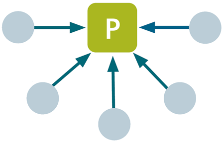

什么是 BACnet 安全连接？
新的 BACnet/SC 数据链路在设备和系统通信级别添加了身份验证和加密。
BACnet/IP and BACnet MS/TP | BACnet Secure Connect (BACnet/SC) |
|---|---|
没有内置安全功能 | 内置安全功能 |
额外的安全措施可能成本高昂 | 提供低至设备级别的经济高效的安全性 |
使用UDP协议，缺乏良好的安全性；广播流量 | TCP 协议与 TLS 安全 WebSocket 一起使用；单播流量 |
无加密 | 基于TLS 1.3安全的通信加密 |
没有认证 | 基于X.509v3证书的个体相互设备认证 |
通信范围主要是本地站点，使用 IT 手段进行保护（如专用 VLANs） | 通信范围扩展到多个站点，还可以保护云中的异地通信 |
BACnet/SC 使用相互 TLS 身份验证。它向两端证明 BACnet 协议数据包的真实性。因此，减少了伪造通信的可能性并建立了加密的端到端通信。
BACnet/SC 附录仅定义了新的网络安全数据链路。从概念上讲，因此可以与 BACnet/IP 和 BACnet MS/TP 上的较旧 BACnet 设备进行通信，就像在 BACnet 世界中始终完成的那样，即通过“BACnet 路由”。因此，它不会从根本上改变 BACnet 应用程序。因此，BACnet/SC 与 BACnet 的任何先前和未来版本兼容。这意味着建筑业主和管理者不需要更换设备，也不会失去现有 BACnet 系统的任何功能。对于他们来说，这只是用于 BACnet/SC-enabled 设备的新 TLS 安全数据链路。
具有 BACnet 安全连接虚拟数据链路的 BACnet 应用程序 | |
|---|---|
应用 | BACnet 应用 BACnet 应用层 BACnet 网络层 BACnet/SC |
应用层 | WebSockets |
传输层 | TLS V1.3 TCP |
互联网层 | IP / IPv63 |
链路层 | Any Datalink for IP or IPv6 |
3截至撰写本文时，仅支持 IPv4。
BACnet/SC是一个虚拟数据链路，在应用程序中直接添加到BACnet网络层下的BACnet协议栈中。因此，传统的非安全 BACnet 与项目中已安全的 BACnet/SC 部分的混合是可能的。然而，这种混合用例场景仍然需要通过其他 IT 手段和 IT 安全设备或物理保护手段来保护系统中尚未 BACnet/SC 部分，这在过去很常见。
The upper BACnet layers, specifically the application layer and network layer, have not changed at all.
The design’s architecture is centered around a so-called “hub”, which acts as a central component where all other BACnet/SC devices (called spoke-nodes) connect to.它使用基于 TLS 安全 WebSocket 的中心辐射原则将设备连接到集线器。如果由于系统规模的原因，系统中有多个集线器，则启用路由器的集线器之间的安全单播路由机制通过常规加密的 BACnet 路由进行管理，或者在分层集线器到集线器场景的情况下，集线器本身是另一个上级集线器的节点，同样通过相应的集线器辐射机制进行管理。使用面向连接的 WebSocket 可以更好地将 BACnet 通信与底层 IP 层通信隔离。这是对 BACnet/IP 的一项 IT 友好改进，如果 BACnet 系统必须跨越多个 IP 子网，则 BACnet/IP 使用直接 UDP 广播和 BACnet 广播管理设备 (BBMDs)：因为 BACnet 广播现在直接在互连的中心辐射网络内处理WebSockets，IP 网络层不再需要处理任何广播，也不再需要 IP 子网与 BBMDs 的人为“桥接”。
Historically, BBMDs have been a challenge to configure in large systems due to the potential deep impact of the underlying IP-network behavior. BACnet/SC 网络完全独立于底层 IP 网络结构。 In an extreme implementation, all nodes (spoke-nodes and hubs) could even be scattered arbitrarily into different IP-networks around the world.只要分支节点可以到达其中心，BACnet/SC 通信就会正常工作。
BACnet/SC 中心辐射原则或基本拓扑在设备之间传递消息。 A BACnet/SC hub is a software function that is typically co-hosted on a BACnet router, but can also be a stand-alone hardware device, or it can be a virtual software component. Regardless, as the hub function is essential to network communication between devices, BACnet/SC can optionally be implemented with redundant hubs (so called fail-over hubs) to avoid downtime.

BACnet/SC Primary Hub | |
BACnet/SC Regular Node | |
集线器连接（TLS 安全 WebSocket） |
集线器将所有消息中继到网络设备。所有 BACnet/SC-enabled 设备都需要连接到主集线器。为此，他们必须向集线器（以及集线器到设备）提供适当的数字证书4）。一旦集线器对设备进行身份验证，它们就可以使用加密的有效负载通过集线器发送消息。
4Note：BACnet/SC 因此进行相互 TLS 身份验证。 In contrast, the typical https protocol is only single-sided, that is: The WebServer authenticates to you by means of a digital certificate, but you have to authenticate to the WebServer application via a user account and password, PIN, mobile phone, etc. This makes BACnet/SC very secure, but also requires an individual certificate per BACnet/SC device.
公认的证书颁发机构 (CA) 确保使用的证书具有签名。集线器连接始终从节点到其集线器建立，这允许与远程集线器建立防火墙友好的拓扑。由于轮辐节点可以访问集线器就足够了，因为底层安全 WebSocket 连接 (WSS://) 始终是从节点到集线器建立的，这转化为 IT - 防火墙规则只需确保（少数）集线器必须可访问以获取流量，但（许多）节点可能很容易驻留在通常只允许传出流量的限制性防火墙后面。
请注意，上图展示了 BACnet/SC 网络的逻辑拓扑。这与网络的物理拓扑无关。也就是说，底层IP网络的布线可以自由配置。它可以是星形、总线、菊花链或任何其他拓扑。
尽管如此，当然还有一些实际的方面：以菊花链形式连接的设备在数学上乘以每个菊花链设备向链末端的故障概率；虽然这对于 BACnet/SC 来说并不特殊，但它只是建议最好不要将集线器放置在菊花链的非常远的一端，因为集线器是 BACnet/SC 系统的关键核心元件，因此不应该是链末端网络故障概率最高的设备。另一方面，由于节点到节点的通信始终必须从源节点到集线器遍历一次，然后再次从集线器到目标节点，因此数据包必须在菊花链中传输的跳数也取决于集线器的放置位置。理论上，最佳位置是链条的中间。然而，在现实项目中，这几乎没有什么区别。根据经验，最好将集线器放置在 /near 菊花链的开头（即：最接近 IP 主干）；如果建筑物的拓扑允许，请将任何特殊的时间关键型设备按照菊花链顺序放置在靠近集线器的位置（或完全避免菊花链）5).
5可以预见的是，出于网络安全原因，随着时间的推移，IT 部门无论如何都会强制执行机制，选择性地阻止 BA 系统的可疑 IP 设备。但如果这些设备成为菊花链的一部分，那么该被阻止设备后面的所有其他设备当然也会被切断任何通信。因此，BAS 的布线范例将从菊花链慢慢转变为直接布线星形拓扑。
从工程师的角度来看，建立BACnet/SC系统与传统的BACnet项目在以下方面有所不同。
- The device that shall act as the primary hub has to be defined.
- The device that shall act as the fail-over hub has to be defined (optionally, if used, but strongly recommended to minimize on downtimes, e.g. on firmware upgrades and the like).
- Each spoke-node has to be told his hub address and its fail-over hub address, if used.
- In larger projects the network load can be reduced by mapping the nodes in a building structure along the building “scopes”, hierarchical hub-of-hub based topologies and “directed hub” traffic optimizations, see A6V11159798.
- Each device has to receive a (public) root certificate which is a commonly shared passport, proving that a device belongs to this very BACnet/SC site.
- Each device has to receive an individual, private operational certificate and corresponding private key which is an individual passport per device, used to encrypt- and decrypt traffic for that device.
- As certificates are provisioned and managed by a certification authority (CA), such has to be defined in the very beginning of a project. As certificates have a certain lifetime before they expire, but also could be compromised and then would have to be replaced, the definition of a CA and the respective workflow to issue-, sign-, renew- and replace certificates is a new workflow that has to be defined- and lived for a project over its full lifetime.
- Note that each hub has a maximum number of nodes that it can support (either directly or indirectly via a subordinate hub connected as node to it), that may not be exceeded at any time. As a hub (together with its nodes) also constitutes a BACnet network, this means that larger networks have to be split into multiple BACnet networks (and be addressed by a proper hub-of-hub topology, see A6V11159798).
- There are a few new properties (esp. in the network port object of the devices) that need to be set for example timeout values, TCP port to be used for the WebSocket communication, etc.
- Most of the times, the BACnet project will still be a mixture of BACnet/SC and non-BACnet/SC devices like BACnet IP and BACnet MS/TP. As has been before in mixed datalink projects, this has to be addressed by BACnet routing. So typically, the engineer will also have to set up the devices of a certain datalink type into a BACnet network of its own and define BACnet routing between the resulting BACnet networks.